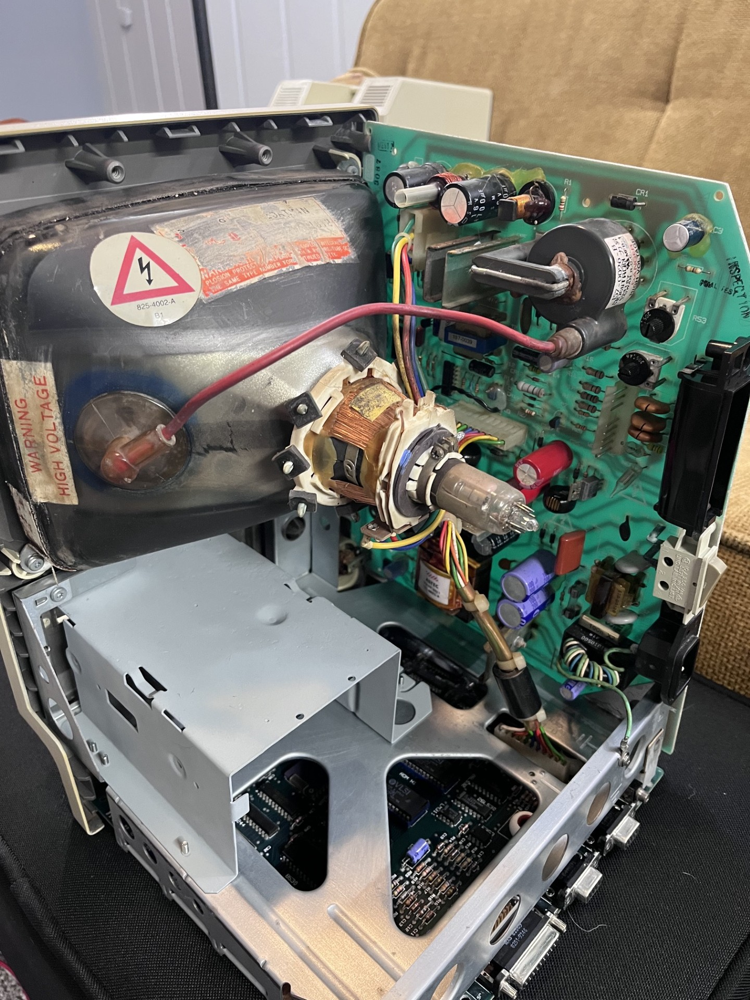
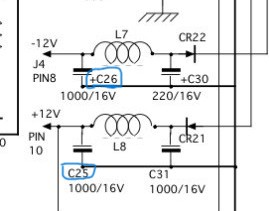
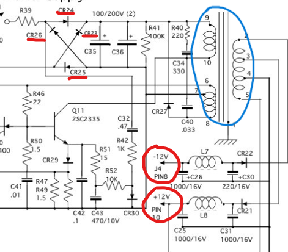

.... .. . s s s
+^""888h. ~"888h @88> :8 :8 :8
8X. ?8888X 8888f %8P u. u. .88 .88 u. u. u. .88
'888x 8888X 8888~ . u x@88k u@88c. .u :888ooo :888ooo ...ue888b x@88k u@88c. .u :888ooo
'88888 8888X "88x: .@88u us888u. ^"8888""8888" ud8888. -*8888888 -*8888888 888R Y888r ^"8888""8888" ud8888. -*8888888
`8888 8888X X88x. ''888E` .@88 "8888" 8888 888R :888'8888. 8888 8888 888R I888> 8888 888R :888'8888. 8888
`*` 8888X '88888X 888E 9888 9888 8888 888R d888 '88%" 8888 8888 888R I888> 8888 888R d888 '88%" 8888
~`...8888X "88888 888E 9888 9888 8888 888R 8888.+" 8888 8888 888R I888> 8888 888R 8888.+" 8888
x8888888X. `%8" 888E 9888 9888 8888 888R 8888L .8888Lu= .8888Lu= u8888cJ888 . 8888 888R 8888L .8888Lu=
'%"*8888888h. " 888& 9888 9888 "*88*" 8888" '8888c. .+ ^%888* ^%888* "*888*P" .@8c "*88*" 8888" '8888c. .+ ^%888*
~ 888888888!` R888" "888*""888" "" 'Y" "88888% 'Y" 'Y" 'Y" '%888" "" 'Y" "88888% 'Y"
X888^""" "" ^Y" ^Y' "YP' ^* "YP'
`88f
88
Now that I have the entire Macintosh's casing and chasis cleaned, I think it is a good time to get started on the electrical repairs. Unlike the three Mime 2A terminals that I had previously worked on, the Macintosh 128k/512k models both have their schematics readily available online. Since both the logic board and the analog boards have been scanned and uploaded to the internet and I will be relying on them heavily.

The board here on the right side in the vertical position is the "analog board", and is what it looked like after repairs. The more accurate name, as silkscreened on the PCB, is the "MACINTOSH SWEEP/POWER SUPPLY", but analog board rolls off the tongue a lot better so I will be refering to it as that.

I initially noticed both C25 and C26 (the +5V and +12V filter capacitors) were bulging and replaced them with equivalent 1000uF 35V capacitors. Other than this, the rest of the board looked good to power on. The floppy drive port on the rear of the Macintosh has the +/-12V and +5V power rails, so testing these voltages is fairly easy. The power supply is a switch-mode power supply, but is of the older variety and requires a load. Because I do not own any 5-10ohm resistors at 10W ratings, I decided to plug in the motherboard so that the powersupply could operate correctly. Well, it did something...

Turning on the Macintosh for the first time I got a low frequency hum with my +12V line delivering ~2.5V and the +5V line with only ~0.8V, obviously way underspecced. Eventually, the Macintosh would no longer power on and was completelty dead. After removing the machine from mains, I tested for shorts and found a direct short on the +5V, +/-12V to ground. The high voltage side ("sweep") that handles the flyback transformer for the 15kV CRT voltage is dependent on the low voltage power supply, so I will start my way from the bottom and I will not be labeling it suspect for now. My naive conclusion is that the windings in the ASTEC 157-0025-A (in blue) have shorted and are causing the voltage rails to fail. Another possible culprit could be diodes in the bridge rectifier. Checking these for shorts would be easy, and is a better starting point than purchasing a new transformer.
My final semester of college is starting up, so I will not be able to return to this for a while :/